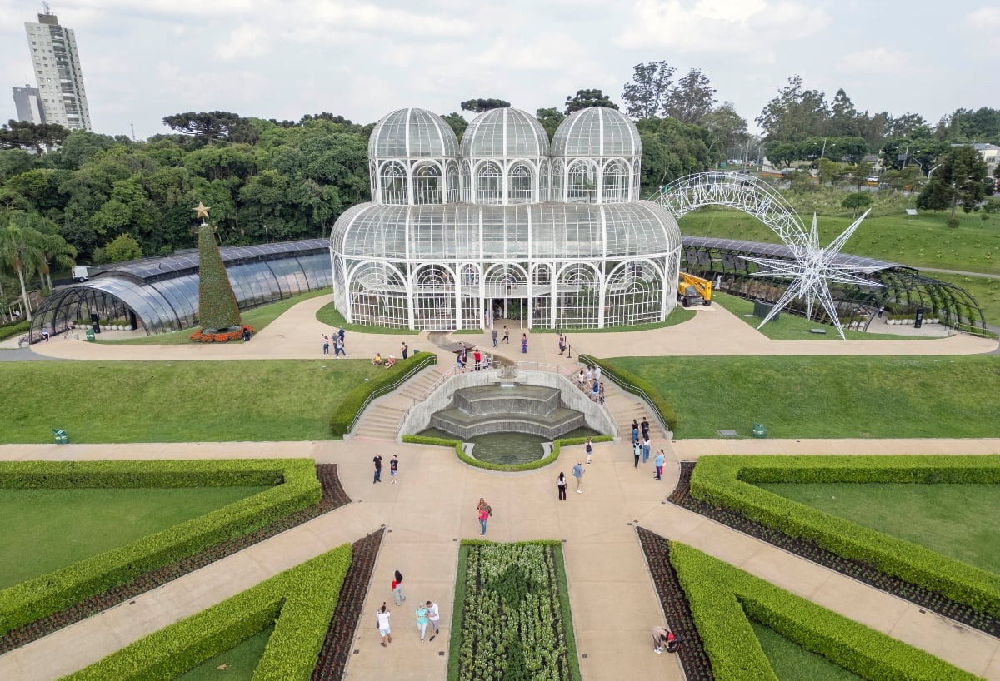
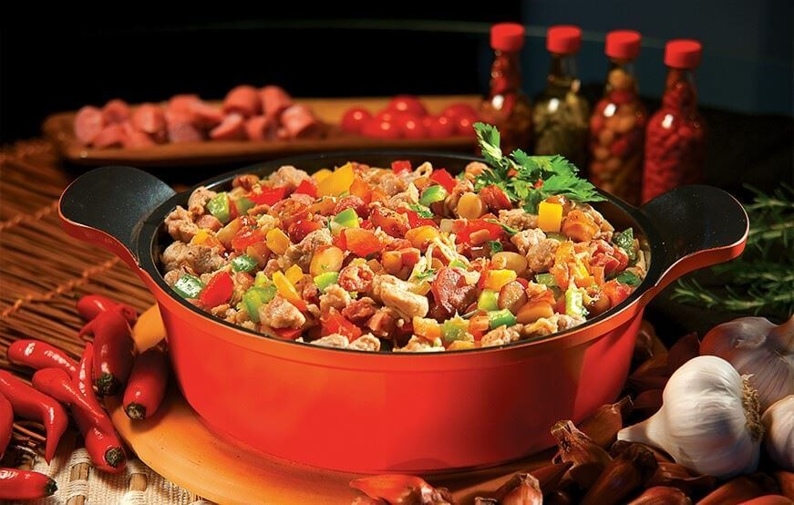

.png)
Pontos TuristicosCuritiba, capital do Paraná, é uma cidade vibrante e inovadora, reconhecida por sua qualidade de vida, organização urbana e harmonia com a natureza. Oferecendo uma rica combinação de espaços verdes, arquitetura moderna e um calendário cultural diversificado, Curitiba é o destino perfeito para quem busca experiências culturais, lazer e contato com a natureza. Venha explorar seus parques, museus e descobrir a gastronomia única da região. |
 |
|---|
|  |
Culinaria em CuritibaO pinhão, semente da araucária, é um dos ingredientes mais tradicionais da culinária curitibana e símbolo do estado do Paraná. Ele é consumido de diversas formas, sendo cozido ou assado na brasa as preparações mais comuns. Rico em nutrientes, seu sabor levemente amendoado agrada o paladar em pratos típicos como a farofa de pinhão e o entrevero — um delicioso cozido com carnes e legumes. Durante os meses de inverno, o pinhão é presença garantida nas mesas e nas festas populares da região. |
|---|
Proximos Evento!Descubra a encantadora capital do Paraná, um destino que combina modernidade, natureza e cultura em perfeita harmonia. Curitiba é conhecida por seus belos parques, arquitetura inovadora e um rico patrimônio cultural que a torna única. Explore os espaços verdes, como o icônico Jardim Botânico, a vibrante Ópera de Arame e o Museu Oscar Niemeyer, que representam a arte e a natureza de maneira sublime. Neste site, você encontrará tudo o que precisa para planejar sua visita: dicas sobre os melhores pontos turísticos, uma seleção de restaurantes deliciosos que refletem a diversidade gastronômica da cidade, e um calendário de eventos culturais que celebram a riqueza da cultura local ao longo do ano. Seja você um visitante em busca de novas experiências ou um curitibano querendo redescobrir sua cidade, aqui você encontrará inspiração e informações úteis para aproveitar ao máximo tudo o que Curitiba tem a oferecer. Prepare-se para se apaixonar por este destino repleto de charme e histórias! |

|
|---|